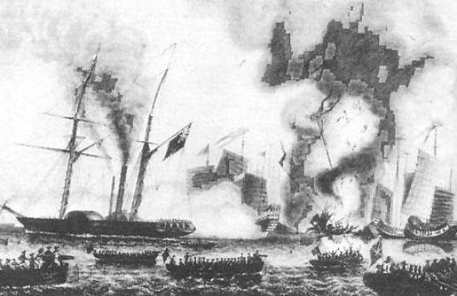

Opium War
Opium War, the first time The First Anglo-Chinese war. Britain often called it the first Sino-British war or "commercial war". It was a war of aggression launched by Britain from China from 1840 to 1842, and it was also the beginning of modern Chinese history.
In 1840 (the 20th year of Daoguang), the British government used the excuse of Lin Zexu and Humen to sell cigarettes and decided to send the expeditionary force to invade China. In June 1840, 47 British ships and 4,000 Army officers under the leadership of George Elliot and Charles Elliot in China, successively arrived outside the Pearl River estuary in Guangdong, blocked Haikou, and the Opium War began. .
The Opium War ended in China’s failure and indemnity. The Chinese and British sides signed the "Nanjing Treaty", the first unequal treaty in Chinese history. China began to rip land, indemnify and negotiate tariffs to foreign countries, seriously endangering China's sovereignty, and began to become a semi-colonial and semi-feudal society, losing its independent status and promoting the disintegration of the natural economy. At the same time, the Opium War also opened a new chapter in the history of the modern Chinese people against foreign aggression.
1War background
The Qing Dynasty before the war
In the early 19th century, Britain became the most powerful country in the world of capitalism, and established the "Day of the Day" empire. And its next major target of aggression in Asia is China.
Since the early Qing Dynasty and the eve of the Opium War, the Qing Dynasty was still an independent feudal state. The former national trend has shown the trend of the river from the end of the Qianlong period. The feudal system has seriously hindered the development of a new modern economy. The burgeoning development of capitalism in the middle of the Ming Dynasty was very slow. Before the Opium War, the self-sufficient natural economy combined with small agriculture and family handicrafts always occupied the dominant position of China's social economy. Land annexation has become increasingly serious and has become a common phenomenon throughout the country. The rule of governance was corrupted, and feudal autocracy developed to the extreme. The Qing government used the "four books" and "five classics" to ban people's thoughts, and carried out brutal suppression on dissatisfaction or commenting on the political politicians. The national defense is empty and the armaments are ruined. In terms of foreign relations, the Qing Dynasty has long implemented a closed-door policy, which has seriously hindered China's foreign trade, social, political, and economic development.
With the increasing corruption of the Qing Dynasty and the increasing oppression of the people, the domestic class contradictions have intensified, and the people’s resistance struggle has come and gone. The Qing Dynasty’s rule was facing a profound crisis, and the Chinese feudal society had reached its end.
Strength expansion
As the Qing Dynasty tended to decline, the capitalism of Britain, France and the United States was developing rapidly. The industrial revolution began in the United Kingdom in the 1960s. In the 1930s and 1940s, the large machine industry gradually replaced the handicraft industry. With the development of British industry, industrial production has risen sharply. "The need to continuously expand product sales has driven the bourgeoisie to travel around the world" and strive to find new resources and product living space.
France is the capitalist country after Britain. On the eve of the Opium War, French industrial production ranked second in the world. The US capitalist industry was not developed on the eve of the Opium War, but it is on the rise. In the 1930s, the American bourgeoisie was looting the land of Indians and Mexicans in the south, excluding the forces of European capitalism in Latin America, and fully controlling the market. Therefore, the United States did not have enough power to invade China in the mid-19th century. The United States served as a helper for the British aggressors, following the British invasion of China. After Russia’s reform of serfdom in 1861, capitalist industry and commerce developed rapidly. Russia is watching China from the north and is ready to seize China's territory.
In the 1940s, the Western capitalist countries took advantage of the industrial revolution and thrived. In order to expand the commodity market and compete for raw materials, the European and American powers have stepped up their efforts to conquer the colonies. China's neighboring countries and neighboring regions have gradually become their colonies or spheres of influence. As a country under the vast ancient feudal Confucian enslavement education, China has naturally become the best object of colonialist aggression and expansion.
Trade surplus
After the completion of the industrial revolution in the UK, a vast market is needed as a commodity export destination, and China just meets this condition and can become a dumping ground for the vast majority of British goods. Since luxury goods such as tea, silk, and porcelain produced in China are very popular in the European market, the British hope that China can open up trade. However, the export of wool, woolen fabrics and other industrial products in the UK is not favored in China. The Emperor Qianlong even believes that China is not lacking anything. There is no need to trade with the UK. This has brought Sino-British trade to a huge trade deficit for the UK. ). The United Kingdom began to implement the gold standard monetary policy in the 18th century, while the Qing court used silver as the currency. Since all trade with China needs to be converted into two silver dollars, the United Kingdom needs to purchase silver from the European continent for trade purposes, and buy and sell gold and silver. The British profit is damaged. In terms of tax rates, China's import of goods to the UK requires a high tax rate of 20%, which makes the UK very dissatisfied.
Opium input
After the industrial revolution, the British bourgeoisie tried its best to sell industrial products to China in an attempt to open the door to China with commodity trade. Until the 1920s and 1930s, China’s trade with the UK continued to maintain a status of over two to three million silver per year. In order to change this unfavorable trade situation, the British bourgeoisie took a diplomatic approach and made a strong negotiation. If it failed to achieve its goal, it adopted a despicable means to smuggle a special commodity, opium, to China by means of "destroying the race." Meet their infinite desire to chase profits.
2 War Reasons
The opium trade has brought amazing profits to the British bourgeoisie, the British and Indian governments, the East India Company and the opium dealers. It broke the long-term advantage of China's foreign trade and made China become a transnational country from over 200 years.
"The crow smoke poisoning, which has not been a disaster for three thousand years in China." A large number of opium imports have made China's annual silver outflow reaching 6 million. There is a serious silver shortage in China, causing silver and money, financial depletion, and treasury emptiness.
The opium input seriously ruined the social customs and ruined the people's physical and mental health. The spread of tobacco poisoning not only harms the Chinese people mentally and physically, but also destroys social productivity and causes the industrial and commercial depression and decline in the southeast coastal areas.
The serious harm caused by the opium trade to Chinese society has aroused the attention of the Qing government and the people. The Qing government started from its own interests, and issued a ban eight times in 1821-1834; some of the ruling class witnessed the social crisis and demanded reform of the malpractice, prohibiting opium in China. In December 1838, Emperor Daoguang’s life was made by Xu, the imperial minister, and sent to Guangdong to ban smoking.
The governor of the Song Dynasty, the Governor of Huguang, Lin Zexu, went to Guangzhou to perform the operation. This is the famous Humen cigarette in history. In March 1839, after Lin Zexu arrived in Guangzhou, he ordered foreign smokers to hand over all the opium, and promised not to sell it again, guaranteeing that "the ship will never dare to bring opium. If it is brought, once it is found, the goods are not official. People are righteous and lawful, and on June 3rd to June 25th, most of the opium stocks that belong to the British are destroyed. The British regarded the Chinese anti-smoking campaign as a violation of private property and felt intolerable, which led to the outbreak of war.
In March 1839, Lin Zexu and the Guangdong-Guangdong Governor Deng Tingyi and the Guangdong Navy Admiral Guan Tianpei planned a smoking ban in Guangzhou. Lin Zexu did not leave the hand of the servant, and the scholars in the intellectual circle were on the same line with him. He called the 365 students of the Yuexiu Academy, Yuehua College and Yangcheng College to take the “examination”. This time, it was called the examination. It was a questionnaire survey. The questions were: “1. Opium distribution center and the name of the operator; 2. Retailer; 3. The past no-smoking disadvantages; 4. The law of ban.” Since then, Lin Zexu has mastered all the smoke. List of filths by businessmen and corrupt officials. Under the auspices of Lin Zexu, the seized opium was destroyed in Humen Beach. The urban and rural people in Guangzhou, who watched the scene, all clap their hands.
3war process
Pre-war situation
In July 1839, the Lin Weixi case occurred in Tsim Sha Tsui, Kowloon. The British sailors drunk in the village to kill the villagers, Lin Weixi, Lin Zexu asked the British business director to hand over the murderer, but the law of justice was lightly judged.
On August 15, 1839, Lin Zexu ordered that all trade be banned, sending troops into Macao, and further expelling British people from the country. This matter thus became the fuse of the Opium War. On October 1, 1839, the British cabinet made a decision to "send a fleet to the Chinese Sea" on the grounds that business was blocked and the lives of the people of the United Kingdom were threatened. Although the British had no right to deposit opium on Chinese territory under Chinese law.
On January 5, 1840, Lin Zexu announced the official closure of the port according to the wishes of the Emperor Daoguang, and forever severed trade with the United Kingdom. On January 8th, the British "Dora suspect" announced that since January 15th, the Guangzhou Port and the Pearl River Estuary have been blocked. On January 16, Queen Victoria gave a speech in Congress, saying that he is paying close attention to the interests of the British in China and the dignity of the country. The incidents in China have caused the disruption of the relationship between our country's subjects and the country. We have paid great attention to it and will continue to pay attention to this incident that affects the interests of our subjects and the dignity of the royal family.
In February, the British government appointed the law and the law as a deputy/deputy plenipotentiary, and the law was the commander-in-chief of the British army.
In April, the British Parliament held a heated debate. Under the influence of Queen Victoria, the military finally took 271 votes to 262 votes. The British government has never officially declared war, and believes that military action is only a reprisal. Not war.
In June, more than 40 British ships and 4,000 soldiers were led by the law (including the 18th Royal Irish Wing, the 26th Scottish Rifle United, the 49th Bangladeshi Brigade, the Bangladesh Army Corps and the Mad The mobile fleet of the Russ Corps, etc., from India to the Chinese sea, marked the beginning of the first Opium War. The fleet has 16 warships (three of which are large warships equipped with 74 cannons), four steam warships and 28 transport ships. After the outbreak of the war, the British continued to reinforce from the mainland. Except for the ship that was replaced by the country, by the end of the war in August 1842, there were 25 British warships, 15 steamships, and more than 60 hospital ships, survey ships and transport ships.
The underlying reasons for sending troops in the UK According to the analysis of Rhodes Murphy, it is to have the opportunity to trade freely with the huge Chinese market and thus to enter the Chinese market directly. And hope that the Qing government can recognize Britain as an equal country. China’s arrogant attitudes such as the traditional world order and the five-serving tributary system, and the arrogant attitude of the dynasty, made the British intolerable to be scorned or neglected and excluded. The attitude of China appeared in the international society that had entered the modern world at that time. It doesn't fit. The United Kingdom regards China's refusal as a backward performance, and some Westerners also have a sense of mission to resort to force to push China into the modern world, and believe that this will bring benefits to both sides. It is the arrogance of both sides that has led to the outbreak of positive conflicts.
British troops first northward
At the beginning of the war, the Chinese side only regarded the British army as barbarians and believed that it was not threatening. In June 1840, the British commander and plenipotentiary led the troops to reach the surface of Guangzhou. According to the instructions of British Foreign Minister Bama Zun, the expeditionary forces blocked Haikou in Guangzhou and Xiamen (now Fujian) and cut off China's overseas trade. And in July, captured Zhejiang Dinghai (now Zhoushan City) as a forward base. At this time, in the coastal areas of China, except for the fact that Guangdong is in the middle of the forest, Xu is under a commanding battle, and the rest are prepared for slack. In August, the British ship attacked the city at an alarming rate and arrived outside the Dagukou of Tianjin. The Taoist Emperor, who had advocated the war, saw the British ship approaching and swayed in the military and began to waver. On August 20, 1840, the Daoguang Emperor approved the British book. , let Qi Shan tell the British, allow trade and punish Lin Zexu, in order to obtain the British ship to Guangzhou, and send Qi Shan to go to Guangzhou to negotiate; at the same time, the British side is also popular with the epidemic, autumn and winter will come, agree to go south to Guangdong negotiation. In October, Qi Shan acted as Governor of Guangdong and Guangxi. Lin Zexu and Deng Tingyi were dismissed. In December, Qi Shan negotiated a private translation of Bao Peng and the law, delaying time. After the British army went south, the Qing court ordered the provincial governors to raise their defense against Haikou, and ordered the governor of the two rivers, Ilib, to lead the troops to Zhedong, ready to recover the sea.
The law of justice lost patience and decided to negotiate after the war. On January 7, 1841, the British army suddenly captured the big horn of the Humen and the Shajiao Fort. The Qing Guards killed and injured more than 700 people, and the handsome ship and the tugboat destroyed 11 ships. Qi Shan was forced to make concessions. On January 25th, he signed the "Natural Grass Contract" with the Law of Righteousness. The first paragraph of the treaty was to cut Hong Kong Island with the United Kingdom. The next day, the British army occupied Hong Kong Island. Lin Zexu was sent to Xinjiang. Although he wrote the book to Emperor Guangdi, he insisted that he must ban smoking and attach importance to Haiphong, so that he was dismissed as a nonsense. However, the "Natural Grass" was not approved by the Chinese Emperor from the beginning to the end, and Qi Shan did not use the seal, so the treaty has no legal effect.
People fight the United Kingdom
During the Opium War, the broad masses of people in the southeastern coastal areas of China actively supported and cooperated with the Qing army and spontaneously persisted in the struggle against aggression. Wherever the invading army went, it was all resisted by the local people. When the British army captured Xiamen, the local people automatically organized and attacked the British army, forcing the invading army to retreat to Gulangyu. The British army invaded Zhejiang, and the Zhejiang people's organization "Blackwater Party" slammed the British army. After the invading army entered the Yangtze River, the people along the river attacked the British army in various ways and prevented the British fleet from advancing.
The Battle of Humen in Guangzhou
The Battle of Humen in Guangzhou (1840.12~1841.8) In December 1840, Qi Shan and Yi Law began negotiations in Guangdong. Because the conditions proposed by the United Kingdom were too harsh and Qi Shan arbitrarily signed it, Daoguang Emperor was greatly dissatisfied. Daoguang Emperor copied Qi Shan from his family and sent Qi Shan, Long Wen and Yang Fang to Guangdong to conduct operations. On January 7, 1841, the British army was not satisfied with the progress of the negotiations. The righteous law first started to be strong, and dispatched the first and foremost portal of the sea and land forces to capture Humen--Shajiao and Dajiao Fort, and launched the Battle of Humen.
Daoguang Emperor ordered the war to be declared against the British, and the minister of the guardian, Lushan, was the general of Jing, and transferred more than 10,000 people from various places to Guangdong. On February 23, the Humen Fort was attacked. Although the troops fought bravely, they lost to the British army and the Humen Fort eventually fell. On February 26th, the British army dispatched the sea and land forces to attack the various turrets of the Humen crossbar and the Dahushan fort, and went straight to Guangzhou. Guangdong Navy's Admiral Guan Tian Pei Li fights the country. On May 21st, more than 1,700 people were killed by the Lushan River. They were dispatched by the Clippers in the night, carrying rockets and spray guns, attacking British ships in the night and throwing fire. On the morning of May 22, 2,400 British troops counterattacked. The Qing army retreated. On May 24th, the British army launched an offensive against Guangzhou, occupying the commercial hall in the southwest of the city all the way, landing in the northwest of the route city, wrapping the north of the city, attacking the fort in the northeast of the city, and shelling the city of Guangzhou. In the vicinity of Guangzhou, all the places were lost. More than 18,000 Qing troops retreated from the city, and the order was chaotic. Under this situation, Lushan and other white flags were summed up, and the British conditions were accepted. The "Guangzhou Peace Treaty" was signed. The United Kingdom not only did not withdraw from Guangzhou. The black-selling Guangzhou merchants also paid a 6 million silver dollar redemption fee to the British army. During the period, the anti-British atmosphere in Guangzhou was fierce, and the atrocities of the British invaders provoked the people in the Sanyuanli area in the northern suburbs of the city to spontaneously arm themselves to fight the British. In order not to be punished by the emperor, Lushan falsely reported the merits of the war and even described the fiasco of the battle as a big victory.
British troops go north again
The British government’s aggression of the righteousness in Guangzhou is still too small. It is the re-designation of Henry Pottinger as a plenipotentiary to China to expand aggression. On August 21, 1841, Zhai Ding investigated 37 ships and 2,500 troops from Hong Kong north, attacked Xiamen, Fujian, occupied Gulangyu (the third battle of Xiamen), and circumnavigated into Zhejiang, and captured the sea on October 1. (In February 1841, the British army became popular with the epidemic, giving up the sea), on the 10th, it was in Zhenhai (now Ningbo), and on the 13th it occupied Ningbo. When the British army was not strong enough, he stopped attacking and waited for reinforcements.
After the defeat of Xiamen and Zhedong, the Daoguang Emperor sent the sect of the Shangshu to the Zhejiang General, and gradually mobilized the soldiers to prepare for the counterattack. In March 1842, the chanting was full of troops, and it was decided to counterattack both at the same time, in an attempt to recover Ningbo, Zhenhai and Dinghai. On the night of March 10, the Qing army launched counterattacks against Ningbo and Zhenhai respectively, and the battles were unfavorable, and they were withdrawn to their original places. The offensive decided to postpone the sea due to the unsatisfactory trend. On March 15th, the British troops stationed in Ningbo took advantage of the counter-attacks in Cixi (now Cicheng Township) and Dabaoshan in the west of the city. The Qing army was defeated and retreated to the west of Cao Yujiang. Daoguang Emperor saw the long-prepared Zhedong counterattack and failed, and transferred the generals of Shengjing to Yingnan to prepare for the battle with the British army (see the battle of Zhedong).
On May 29, 1841, the British troops who were entrenched in the square of the northern suburbs of Guangzhou smashed into the Sanyuanli to harass and rob. The local people fought to fight and killed several British troops. Subsequently, the whole village, men, women and children gathered in the Sanyuan Ancient Temple, with the flag of Samsung as the flag, "the flag entered the people, the flag retired," and at the same time, contacted thousands of farmers and handicraftsmen nearby, holding large knives and long Spear, raining to meet the enemy. At this time, the British army had only one Marine Corps company. The British army was trapped in Niulangang. It was raining heavily, the gunpowder was damp, unable to exert its power, and it was a melee battle. A British soldier died. The British army sent two sailors to join the reinforcements with a "detonator gun" (not afraid of rain). Two hours after being besieged, the British troops retreated to the Quartet. The next morning, more than 20,000 people held up the Samsung flag and surrounded the square. The commander-in-chief of the British army sent a message to the local governor, Yu Baochun. If he did not dispel the bravery, the main British army would attack and kill Guangzhou City. Yu Baochun clearly understands the strength of both sides. He also knows that the British guns will not be damp forever. Therefore, he persuaded him to avoid being detained, and he will be the notoriety of the traitor. After Sanyuanli resisted the British, the Guangdong people organized armed forces in the form of "social science" to carry out the struggle against aggression.
Qingjun retreat
The British government believes that the "Nasal Grass" has too little interest, removes the law of justice, and reassigns Ding Ding to Huawei as a plenipotentiary to expand aggression. On August 27, 1841, the British army once again went north and captured Gulangyu, Xiamen, Dinghai, Zhenhai (now Ningbo) and Zhangpu (Zhejiang Pinghu). Among them, Dinghai was attacked for the second time. The general soldier Ge Yunfei and the four thousand soldiers died, and the British army also suffered heavy losses. The British army later attacked Wu Jiang, the gateway to the Yangtze River. The Jiangnan admiral Chen Huacheng led the army to defend the Western Fort. The two governors, Niu Jian, wanted to seek peace and ordered the retreat to be rejected. Niu Jian escaped, the East Fortress was captured, Chen Huacheng and his men slammed against the Western Fort, and fought alone until the war. Wu Hao’s defeat made the British warships enter the Yangtze River. The Zhenjiang garrison deputy dynasty Haidun heard that Zhapu and Wu Hao were not defensive, and believed that the Han people were enemies and killed the Han Chinese. On July 21, more than 6,600 British troops defeated the Green Camp defenders outside Zhenjiang City. They crossed the city and entered the 1500 Mongolian Eight Flags. The British army killed 37 people and injured 129 people. The flag soldiers died about 600 people and committed suicide. The whole city was burned and ruins. On the other side of Zhenjiang, the Yangzhou merchants were afraid of the situation and paid 500,000 yuan to the British army to redeem the city, free of military occupation. On August 4th, the British army forced Nanjing, and the Qing court was in a disadvantageous position.
From September 30, 1841 to March 11, the following year, the British detachment fleet also repeatedly invaded Taiwan. Due to the full preparation of the defenders and the clever tactics, they achieved a rare victory in the entire war. Only 182 people were captured by the British army (see Taiwan's anti-British struggle).
In May 1842, the British army abandoned Ningbo and concentrated its forces on northern criminals. On the 18th, it captured the town of Zhangpu, Pinghu, Zhejiang. On June 16th, Wu Hao’s battle was launched, and Jiangnan’s admiral Chen Huacheng died. Since then, the British aid forces have arrived in the Yangtze River estuary, and Ding Ding has ignored the shackles and notes of the British and other people. It has 73 ships and 12,000 troops, and is on the Yangtze River to prepare to cut off the inland traffic artery canal. On July 21, more than 6,900 members of the British Army launched the Battle of Zhenjiang, and they were stubbornly resisted. They were shot and wounded by 169 people and then captured Zhenjiang. On August 4th, the British ship entered the lower reaches of Nanjing, and then the British army landed from Yanziji, inspecting the terrain and threatening to attack Nanjing. Under the deterrent of the British military ship, the imperial ministers of the Qing dynasty, Ying Ying, Yi Libu, and the governor of the two rivers, Niu Jian, compromised and retired, and were forced to negotiate with the British army at Jinghai Temple and Shangjiang Examination Hall. During the negotiations, the British army’s evil deeds triggered a local Jingjiang defense war. The invaders lost 13 people after the death and injury (from the perspective of the war between Taiwan and Jingjiang, the number of British casualties recorded today is not suspicious).
On August 29, 1842, Yan Ying and Ding Ding signed an unequal Sino-British Treaty of Nanjing.
4 War Results
In 1842, the Qing government was forced to negotiate with the British government at Jinghai Temple in Nanjing. The two sides negotiated four times in the temple. On August 29th, the Qing government of China accepted all the terms and conditions proposed by the United Kingdom. On the British flagship "Khanhua" (also translated as "Korean"), it officially signed the first unequal treaty in modern China, the "Nanjing Treaty". , meeting most of the requirements of the UK. Main content:
1. Cut Hong Kong Island to the UK. (loss of territorial sovereignty)
2. Open Guangzhou, Xiamen, Fuzhou, Ningbo, and Shanghai as trading ports, allowing British people to set up consulates at the trading ports. (loss of trade sovereignty)
3. China has paid 21 million yuan to the UK. The composition of 21 million yuan is: 6 million compensation for opium, 3 million repayment of British debt, 12 million British military. (a lot of silver efflux)
4. The UK's import and export goods tax in China, China and the United Kingdom jointly agreed. (loss of tariff sovereignty)
5. British businessmen are free to trade with Chinese businessmen and are not subject to "public bank" restrictions. (loss of trade sovereignty)
In 1843, the British government forced the Qing government to conclude the "five-ports statutes" and the "five-mouth trade affiliation clause" ("Humen Treaty") as a contract of the "Nanjing Treaty", adding consular jurisdiction, One-sided MFN status and other terms. The powers do not want Britain to sit on the big, and have signed more unequal treaties with China. On July 3, 1844, China and the United States signed the "China-US Watch Treaty." On October 24, 1844, France signed the "Whampoa Treaty" with China, and enjoyed consular jurisdiction and missionary rights. On October 8, 1843, China and Britain signed the "Humen Treaty", re-establishing the MFN status and consular jurisdiction enjoyed by the United Kingdom. Since 1845, Belgium, Sweden and other countries have also coerced the Qing government to sign similar treaties, and China’s sovereignty has been further damaged. The failure of the Opium War and the signing of a series of unequal treaties such as the "Nanjing Treaty" have brought about fundamental changes in Chinese society. Politically independent China, after the war was destroyed by territorial sovereignty, the self-sufficient natural economic disintegration gradually became the commodity market and raw material supply of world capitalism, and China began to become a semi-colonial and semi-feudal society.
5 War Impact
The failure of the Opium War and the signing of a series of unequal treaties have brought about fundamental changes in the nature of Chinese society. Foreign capitalism has been ceded from China to Hong Kong Island, with a total of 21 million yuan in banknotes, opening five trades in Guangzhou, Fuzhou, Xiamen, Ningbo and Shanghai, as well as a series of privileges such as tariff, consular jurisdiction and one-sided MFN treatment. China’s independent sovereignty. After the signing of the "Nanjing Treaty", the United States and France came one after another, took the opportunity to obtain privileges, and forced the Qing government to sign a series of unequal treaties. The Opium War marked the beginning of modern Chinese history. Since then, China has experienced deeper suffering, and the Chinese people are facing more complicated twists and turns.
Politics
The Qing government began to become a tool for the powers to rule China. As China’s territorial, territorial, judicial, tariff, and trade sovereignty began to be severely damaged, China gradually became an semi-colonial and semi-feudal country by an independent country.
The victory and defeat of the Opium War reflected the huge gap between the East and the West in science and technology, breaking the Qing government’s dream of “going to the country”, and the internal and external troubles came to the fore. The feudal society was in crisis and prompted a group of political eyes. Feudal intellectuals will further explore and find good strategies for Chinese society to get rid of difficulties and crises. Relying on traditional classics, they take responsibility for saving the world, defending the whole society and reforming the maladministration. They advocate learning Western technology and resisting aggression, and gradually form a social trend of thought in the landlord class. Many scholars such as Lin Zexu and Wei Yuan began to pay attention to the advancement of Western science and technology and introduced Western things in books. However, the vast majority of people, including the imperial court, did not change their views on the West because of the Opium War, let alone learn from the "Easy people" that they have always despised. The defeat of the Qing court did not enable it to carry out reforms. Instead, it continued to carry out a conservative retreat policy, which led to the second opium war that followed the emergence of the Westernization Movement and other self-reliance and national salvation movements.
Economy
As the powers dumped products to China and the acquisition of Chinese agricultural and sideline products such as silk and tea, China was gradually involved in the world market; the dominant self-sufficient natural economy was strongly impacted, and China became increasingly world capitalism. Part of the market. This objectively promotes the development of China's commodity economy and is conducive to the rise of Chinese national capitalism. However, foreign capitalism has further intensified class contradictions and, to a certain extent, led to the outbreak of the Taiping Heavenly Kingdom movement.
The Qing court’s response to the inequality of the Nanjing Treaty was not fierce. Instead, it was uneasy about the adoption of an equal system between Chinese and British documents. However, economically, foreign trade has grown rapidly, and the Chinese market has also been opened to foreign countries.
Sino-British Treaty of Nanjing Circumcision of Hong Kong Island The Qing court’s response to the inequality of the Nanjing Treaty was not fierce. Instead, it was uneasy about the adoption of an equal system between the Chinese and British documents. However, economically, foreign trade has grown rapidly, and the Chinese market has also been opened to foreign countries. After the five-nation trade, the customs and tax rates of the Qing Dynasty were controlled by the United Kingdom, and the tariff sovereignty was undermined. Imported goods were only pumped at a low rate of 5 percent, and foreign goods were heavily dumped in China, which could not guarantee the development of domestic industry and commerce in China. Opium continues to sell, silver is outflowing, silver prices are rising, and the situation of silver and precious money is even more serious. The number of British imports into China has increased significantly. In 1837, the total value of British exports to China was more than 900,000 pounds. By 1845, it had reached 2.39 million pounds. As foreign investors invest and build factories in China, they have stimulated the desire of a number of domestic bureaucrats, landowners and businessmen to start investing in modern industries.
Among the newly opened five treaty ports, Shanghai in the Yangtze River estuary is closest to the main export materials of silk and tea, and is located in the area of Jiang and Zhefu, and is the middle station of domestic north-south shipping. Merchants and their hired compradors flocked to open a foreign bank. The Anglo-American countries have successively established concessions along the Huangpu River and expanded to form the Shanghai public concession and the Shanghai French Concession. Later, the central road of the Shanghai public concession was named Nanjing Road to commemorate the opening of the Nanjing Treaty. The opening of the Chinese market has led to the first trade in commodity trade in coastal areas, the growing vigor of industry and commerce, and the rise of a large number of emerging cities, laying the foundation for the coastal areas to become the most developed regions of China's economy.
Thoughts
After the Opium War, some intellectuals began to abandon the concept of stereotypes, pay attention to the world, explore new knowledge, seek the way to strengthen the country, and sprout a new wave of thoughts to the West, which has had a certain impact on feudalism. In social contradictions, with the changes in the nature of society, the main contradiction of Chinese society has also changed from the contradiction between the landlord class and the peasant class to the contradiction between foreign capitalism and the Chinese nation, feudalism and the people. The revolutionary tasks of the Chinese people have changed from anti-feudalism to anti-feudalism and anti-aggression. Thus, China's entry into the semi-colonial and semi-feudal society from feudal society was the beginning of modern Chinese history and the beginning of the old democratic revolution in China.
With the deepening of the economy, foreign advanced culture was also introduced to China at the same time: natural science washed the feudal superstitions and ignorance of the Chinese; the foreign lifestyle began to integrate into the life of the upper class; the idea of democratic freedom and equality was also in China. The country quietly spread, laying the ideological foundation for the later Reform Movement of 1898 and the Revolution of 1911.
6 War Ratings
General Review
The Opium War is China’s first war against Western capitalist powers. The British army defeated China with less troops and less cost. The reason is that, besides objectively, the enemy weapons have an advantage, the strategy and tactics are used properly, and most of the forces can be transferred to the coastal cities and occupy the economic lifeline. In the battle, the frontal attack and the flank package are often combined, and subjectively It is the corruption and incompetence of the Qing government. Political Corruption China's feudal social system became more and more decadent in the 1930s. Not only was the economy stagnant, it was very backward, and it weakened the economic foundation on which the war won. The whole ruling group was filled with enjoyment and corruption.
With the input of opium, most of the ruling groups are increasingly relying on this drug to kill the ridiculous parasitic life. They accept both the inside and outside of the smokers, and rely on the smuggling of such drugs to obtain benefits. Some smuggling vessels, openly inserted into the banner of the Governor of Guangdong and Guangxi or the supervision of the Guangdong Customs, drove from the ocean to Guangzhou. The aristocratic ministers of the Qing court received rich bribes from the Guangdong and coastal bureaucrats. Even the emperor also collected a large number of Western treasures, becoming the biggest beneficiary of this "business" relationship. Therefore, on the issue of smoking bans and anti-smoking, war and peace, they have always been vacillating, and there has been no firm policy throughout the war. From the emperor to the general, the governor, the cares, there is no way to fight, there is no practical method of warfare. When the war is frustrated, they immediately seek peace; they cannot make a decision, and they scream and fight. When negotiating and surrendering are better than maintaining a crumbling rule, they humiliate and surrender.
The political reaction and decay brought about the military incompetence and the vast and long-lasting Chinese coastline, which has long been neglected and prepared. The Qing army, which is dominated by the Eight Banners and the Green Camp, has been pampered for a long time, lazy in training, distracted in the military, and relaxed in discipline; the quality of the generals is low, the military thoughts are conservative and backward, and they will not organize and direct war. After the outbreak of the Opium War, many generals did not succumb to the enemy's situation. The defenders of the building were behind the building, and the first-line defense, regardless of the depth of the side; the defenders in many areas saw the enemy's army bombarded, not waiting for the enemy to approach, one will It’s scattered, fleeing, and even raising the white flag to surrender. Ningbo, Yuyao, Cixi, Fenghua, Shanghai and other places, did not fight and give up. The resistance groups headed by Lin Zexu and Deng Tingzhuo, despite their determination and achievements in the struggle against the British invaders, were eventually attacked by the capitulationists. "There is a sense of saving the country and no dimension." (Poet Lu Yiyu) ). The appointment of capitulating elements, such as Yingying and Yilib, to resist the aggressors is undoubtedly a fish.
Leaving the people, opposing the people, and even suppressing the people to fight against the aggressors. In the national self-defense war, the Qing government’s reactionary government did not widely mobilize and organize the people. It relied on limited military power to divide the troops on the long coastline. It was originally an enemy. My situation, but in the actual battlefield, it has become a situation in which the enemy is ignorant. Even when the Chinese people spontaneously rise up against the aggressors, they are afraid of dying, ridiculously accusing them of "hidden confusing" and "very damaging", opposing opposition, destruction, suppression, until degrading to collude with foreign aggressors, suppressing The patriotic people’s struggle against invasion. Such a reactionary, decadent government is simply impossible to win the war against aggression.
History evaluation
Zhao Erzhen and other "History of the Qing Dynasty": Yuanren trade, construction and prosperity. It is considered to be the cause of the previous generation. The minister of the matter first took the matter, followed by fear and sorrow. The so-called monarch and no minister can be saved and cannot be saved. After the national step, the end is here. Hey, hey!